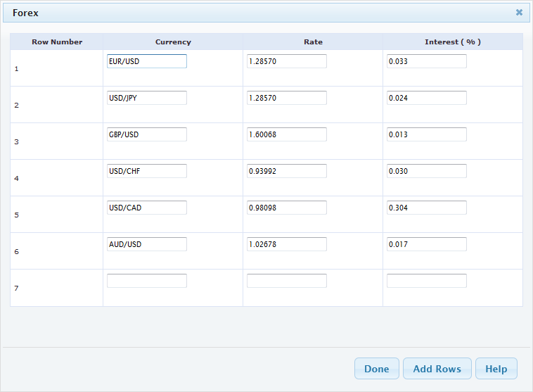
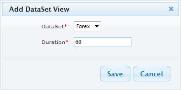
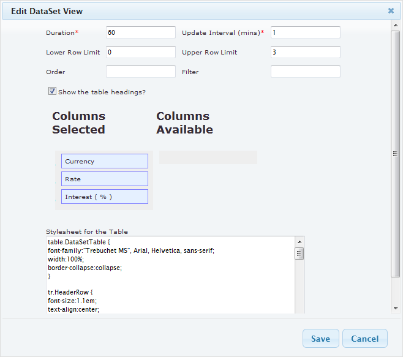

Overview
DataSets are a new Xibo feature to design and display tabular data, formatted nicely, in a region on a layout.
Examples of where this could be used are:
- A drinks menu at a bar
- Tee times at a golf club
- Meeting room bookings
DataSets have been designed to be versatile and reusable and therefore come in two parts:
- The Data (DataSet)
- The Display (DataSet View)
This means that you can define a data set as a number of columns, add rows and then create “views” of this data on your layouts.
Creating a DataSet
DataSets are accessed using the “DataSets” link in the “Library” menu, navigating here will bring you to a very familiar Xibo “table” view of all the data sets you have permission to access. You can add a new dataset by giving it a name and an optional description, you can also edit existing ones and add data.

The creator of a dataset (or an admin) is able to set the permissions for the DataSet on a user group, or on a user by user basis. Only users with Edit permissions will be able to add/edit data and reorganise the data structure, only users with a view permission will be able to use the DataSet in their layouts.
The first thing to do is Add a new DataSet using the "Add Dataset" button, after doing so the columns of the DataSet can be defined to describe the structure of the data.
Defining Dataset Structure
Data Columns are used to define the structure of the data, each column can have a number of settings to achieve this, these are:
- Heading: the column heading to appear when you enter data
- List Content: enter a comma separated list of values in here. The list is displayed in the drop down list during row data entry
- Column Order: the order to place the column

There is not a theoretical limit to the number of columns Xibo can support; although a smaller DataSet is often easier to enter and display than an overly large one. Columns may be extended in the future to have support for different data types. Currently only strings are supported.
Note: Columns can be added and removed after data has been entered. The ordering and list content of columns can also be changed after data has been collected.
Adding Data
Once all the required columns have been added, the DataSet is ready to have data recorded against it. This is done using the “View Data” task on the DataSet table view. This view will contain all of the columns that were added in the previous step and allow you to go through each one and enter data.

There is no “save” button on this interface, Xibo will automatically save your changes after each data entry.
Note: If all the rows are taken, more rows can be added to the data set by clicking the “Add Rows” button.
The DataSet is ready to be used on a layout!
Using the DataSet
Once a DataSet has been defined, anyone with “View” permissions can use the DataSet on layouts. They are added by selecting the “DataSet” button from a region Timeline, which presents a drop down list of all DataSets available to the user as well as the usual duration field for entering the duration in seconds that the DataSet should be shown.

Once added, the edit dialog will automatically appear allowing the user to pick their options for the DataSet View.

On this form the user can specify:
- Duration: The display duration in seconds
- Update Interval: The duration in minutes the data should be cached on the client
- Lower Row Limit: The row number to start displaying the data
- Upper Row Limit: The row number to end displaying the data
- Order: The Ordering of the data (column name ASC|DESC)
- Filter: A filter option to filter the data with (Column Name=Value, Column Name=Value)
- Show Table Headings: Whether to show the column headings in the table
- Columns Selected: The columns to display�(drag or double click to move between lists)
- Columns Available: The columns available to select (drag or double click to move between lists)
- Stylesheet: A CSS Stylesheet to render with the table
Following is an example of the "Styleshee for the Table" which will produce the table on the Clent Display as shown below:
table.DataSetTable {
font-family:"Trebuchet MS", Arial, Helvetica, sans-serif;
width:100%;
border-collapse:collapse;
}
tr.HeaderRow {
font-size:1.1em;
text-align:center;
padding-top:5px;
padding-bottom:4px;
background-color:#A7C942;
color:#ffffff;
}
tr#row_1 {
color:#000000;
background-color:#EAF2D3;
}
td#col_1 {
color:#000000;
background-color:#EAF2D3;
}
td.DataSetColumn {
color:#000000;
background-color:#EAF2D3;
border:1px solid #98bf21
}
tr.DataSetRow {
text-align:center;
color:#000000;
background-color:#EAF2D3;
border:1px solid #98bf21
padding-top:5px;
padding-bottom:4px;
}
th.DataSetColumnHeaderCell {
font-size:1em;
border:1px solid #98bf21;
padding:3px 7px 2px 7px;
}
span#1_1 {
}
span.DataSetColumnSpan {
}
The resulting view will be showing the region preview window and displayed on the client.

Note: Once the DataSet view is configured it will automatically respond to edits made on the data – and it multiple views on the same DataSet can be created.